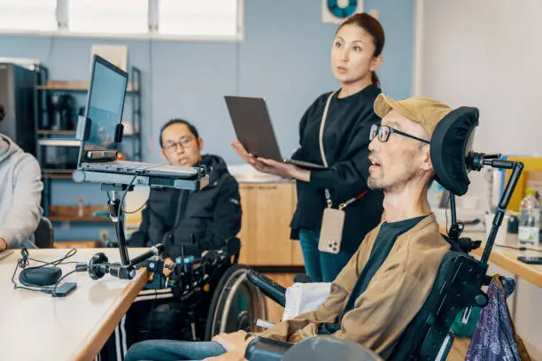

Hva er universell utforming?
Universell utforming er prosessen med å lage produkter som er tilgjengelige for mennesker med et bredt spekter av evner, funksjonshemminger og andre egenskaper.
Hvofor er det viktig å gjøre nettinnhold tilgjengelig for alle brukere?

Viktigheten av tilgjengelig nettinnhold er å sikre at alle er inkludert, spesielt personer med fysiske funksjonshemninger og at det ikke er diskriminering.
Hva er «uutilsynet» og hva er noen av deres hovedoppgaver?
Uutilsynet er forkortelse for Tilsynsrådet for universell utforming av IKT i Norge. Deres hovedoppgave er å sørge for at informasjonsteknologi (IKT) og digitale tjenester er tilgjengelig for alle, uavhengig av funksjonsevne. deres viktigste viktige oppgaver er veiledning og informasjon, tilsyn og kontroll osv